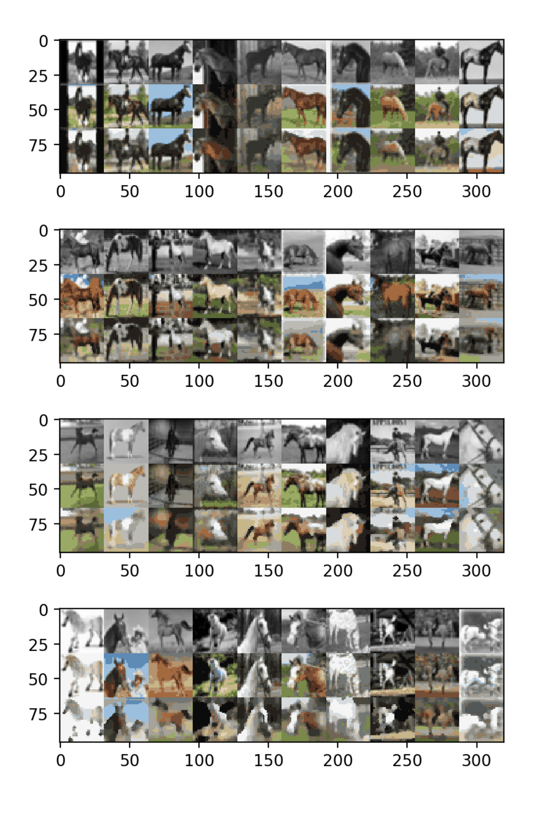
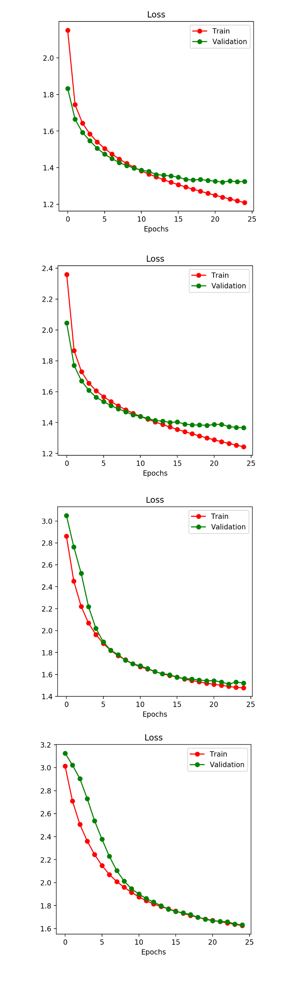

CMP 717 – Practical 3: Convolutional Neural Networkss
Problem 1: Colourization as Regression
- 1.1) Describe the model RegressionCNN.
- 1.2) How many epochs are we training the CNN model in the given setting?
25 Epochs
- 1.3) Comment on how the results (output images, training loss) change as we increase or decrease the number of epochs.
While number of epoch is increasing, training loss value and validation loss value are decreasing. But the acceleration of the decreasing of the loss value is increasing. After some epoch, loss value reachs the plateu and does not decrease.
The output images of the RegressionCNN are better until 25 epoch. After 25 epoch, there is no improvements on the output. Because, overfitting can occur at large number of epochs.
1.4) How could using the RGB colour space be problematic?
- 1.5) How does framing colourization as a classification problem alleviate the above problem?
Framing colourization problem as a classification problem force the neural network to choose a color that it belives to be the most accurate instead of the mediore, average guess.
Problem 2: Colourization as Classification
- 2.1) Complete the model CNN in colourization.ipynb.
Implementation of the model CNN is completed in colourization.ipynb!
- 2.2) Run main training loop of CNN in colourization.ipynb on Colab.
Compared to regression model, The colour accuracy is much more accurate. Even though there are pixels with wrong colour or are still gray, many of the objects have similar color compare to the targets.
Some of the wrong-coloured objects from validation images include a gray sky instead of a blue sky, and a white horse instead of a yellow one.
Problem 3: Skip Connections
- 3.1) Add a skip connection from the first layer to the last, second layer to the second last, etc.
Implementation of the model CNN is completed in colourization.ipynb!
- 3.2) Train the ”UNet” model for the same amount of epochs as the previous CNN.
Skip connections improves the overall accuracy of the model. The validation loss decreases from 1.8 to 1.30. So, validation accuracy increases from 33% to 49%.
Why does these improvements occur when skip connections are added?
(1) The model with skip connections has more trainable parameters than the previous CNN. So, the model with skip connections can learn more complicated features.
(2) Some information is lost during the pooling in previous CNN. Adding skip connections provides some of those lost information to next layers.
- 3.3) Describe the effect of batch sizes on the training/validation loss, and the final image outputs.
While increasing batch size, Training time gets lower. If we use batch_size = 1, training time reaches to the highest value.
Additionally, According to Figure below, Increasing batch size results in "decreasing training and validation accuracy" and also "inreasing training and validation loss values"
Batch Size Effect
| Batch Size |
Validation Loss |
Validation Accuracy |
| 50 |
1.32 |
50% |
| 100 |
1.36 |
49% |
| 500 |
1.52 |
43% |
| 1000 |
1.63 |
41% |
| RegressionCNN Output |
Loss Plot |
|

|

|
Problem 4: Super-Resolution
- 4.1) What is the resolution difference between the downsized input image and output image?
The resolution of the output image is 1/16 of the input image. Because each average pool layer with kernel_size = 2 reduce the resolution of the image to 1/4 of the original image.
- 4.2) Give at least two reasons why conv nets are better than bilinear interpolation.
The results from both models are almost close to each other. However, UNET has a little bit lower loss value. The bilinear interpolation results looks like a blurred version of target image.
ConvNets are better, Because :
(1) With more parameters and nonlinearity, a neural network is capable of capturing more informaiton and regularities in reconstracting the picture.
While bilinear interpolation is only weighted average of two weighted averages.
(2) ConvNets can learn and accomodate to some specific characterestics of the target.
(3) The drawback of bilinear interpolation is that it is both memory and computationally intensive: bilinear interpolation increases the feature size quadratically while keeping the same
amount of “information” as measured in the number of floats.
Problem 5: Visualizing Intermediate Activations
- 5.1) How are the activation in the first few layers different from the later layers?
The activations in the first layer of CNN seems to resemble the input picture a lot. It seems to be extracting different information such as gradient of intensity in the input image.
Many details from the original input image is still visible. In the next layers, the activation is more unclear. While some still roughly maintain the shape of the input image, others are not obvious.
- 5.2)Visualize the activations of the colourization UNet for a few test examples. How do the activations differ from the CNN activations?
First 3 layers are same as CNN's. Because there is no different approach until fourth layer. After third layer, We concatenate the same size of layers and create new layer.
According to output of activation layers, more details can be observed. So, model can learn more complex features than CNN. This should be a result of passing in the image
directly into last layer.
- 5.3) Visualize the activations of the super-resolution UNet for a few test examples. Describe how the activations differ from the colourization models?
Different from previos activations for colorization, the activations for super-resolution are mostly blurry and unclear. The reason could be that the input image itself is with
low resoulution. The activations for next layers resemble the target image a little bit more.
Problem 6: Conceptional Problems
- 6.1) What are some hyperparameters that could be tuned?
(1) Learning Rate
(2) Number of Layers
(3) Kernel Size
(4) Number of Filters
(5) Activation Functions
(6) Batch Size
(7) Number of Epoch
- 6.2) In the RegressionCNN model, nn.MaxPool2d layers are applied after nn.ReLU activations,
comment on how the output of CNN changes if we switch the order of the max-pooling and
ReLU?
RELU function is a non-decreasing dunction. Max pooling is a linear function. Max-pooling always chooses maximum value of a group of values. So, Output should not be changed.
- 6.3) Describe how we can modify the trained models in this assignment to colourize test images that are larger than 32×32.
In order to obtain the best possible performance from these models, the training
and testing data distributions should match. However, often data pre-processing procedures are
different for training and testing. To solve this issue, we can train our model with different image sizes. Also we can crop ann resize related ROI from image. Image Augmentation can be employed.
{kind=link}
{kind=link}
{kind=link}
{kind=link}
{kind=link}
{kind=link}
{kind=link}
{kind=link}
{kind=link}
{kind=link}
{kind=link}
{kind=link}
{kind=link}
{kind=link}
{kind=link}
{kind=link}
{kind=link}
{kind=link}
{kind=link}
{kind=link}
{kind=link}
{kind=link}
{kind=link}
{kind=link}
{kind=link}
{kind=link}
{kind=link}
{kind=link}
{kind=link}
{kind=link}
{kind=link}
{kind=link}